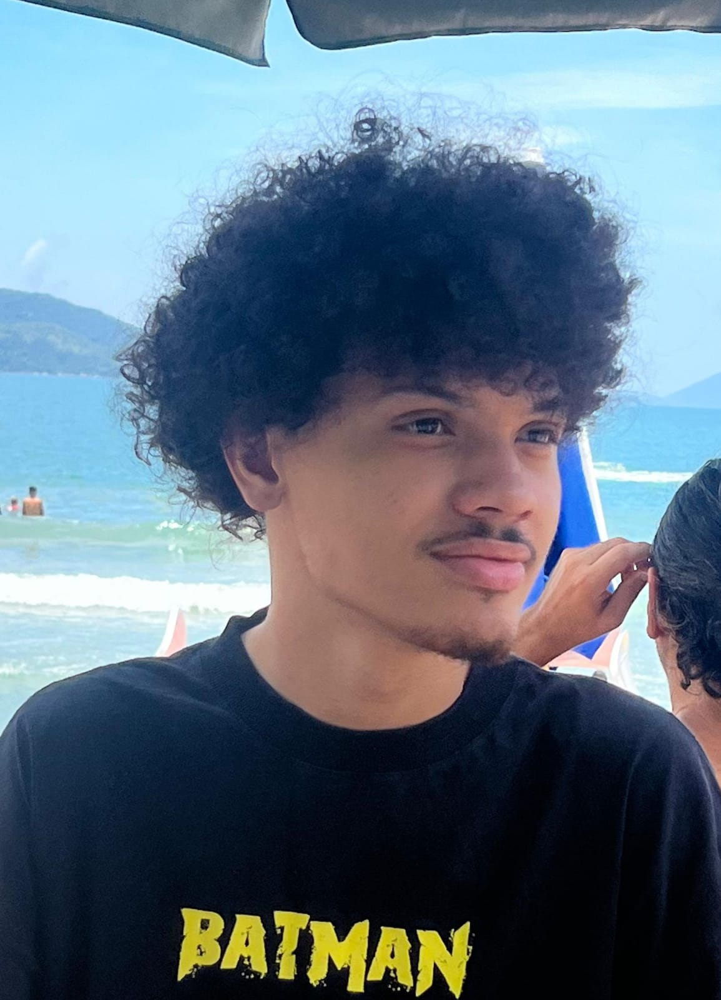

Elias Teixeira
Estudante de Análise e Desenvolvimento de Sistemas
Olá, Desenvolvedor fullstack em formação, com experiência em Java e JavaScript. Desenvolvo interfaces claras e funcionais e tenho interesse em automação e sistemas, utilizando programação para criar soluções práticas e eficientes.
Desenvolvedor fullstack em formação, com início na programação em 2025, construindo uma base sólida em lógica de programação, HTML, CSS e JavaScript. Desenvolvi o projeto Radar Cultural, uma aplicação com sistema de login, cadastro e controle de sessão utilizando armazenamento local, onde apliquei conceitos de manipulação de DOM, organização de código e estruturação de interfaces.
Atualmente, estou focado no desenvolvimento back-end com Java e MySQL, buscando evoluir na construção de aplicações completas, integrando front-end e back-end de forma funcional e escalável. Tenho como foco o aprendizado contínuo por meio de projetos práticos, visando consolidar minha entrada no mercado de tecnologia.
No meu Github, você pode encontrar uma variedade de projetos que refletem minha paixão por tecnologia e desenvolvimento de software. Desde projetos de desenvolvimento web utilizando HTML, CSS e JavaScript, até aplicações mais complexas que envolvem Java e MySQL, cada repositório é uma demonstração do meu compromisso em aprender e crescer na área de tecnologia. Além disso, compartilho projetos relacionados a automóveis, onde aplico meus conhecimentos técnicos para criar soluções inovadoras e interessantes. Convido você a explorar meu GitHub para conhecer mais sobre meus projetos e contribuições na área de tecnologia.
Futuramente colocarei projetos de Java e MySQL
0
Meses de Estudos
0
Projetos Completos
0
Tecnologias